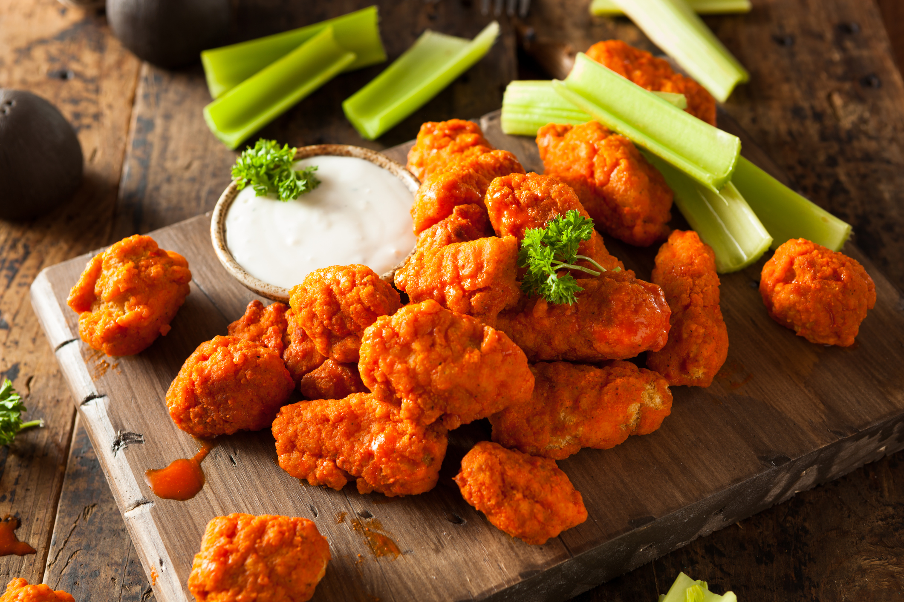

Home
Baked Boneless Buffalo Chicken Bites

Description
- Servings: 4 (1 serving = 3 nuggets)
- Calories per Serving: 103
These Baked Boneless Buffalo Chicken Bites are deliciously spicy with the kick of buffalo flavor you love and, at the same time, are perfect for weight loss. That’s right: Crispy, bite-sized chicken nuggets with seasoned breading covered in homemade buffalo sauce at only 103 calories. As a bonus, you can make this easy buffalo chicken recipe right at home whenever you want.
Ingredients
- 8 oz. chicken breast, cut into 12 nugget
- 1/4 cup whole wheat bread crumbs
- 1/4 tsp. onion powder
- 1/2 tsp. garlic powder
- 1/8 tsp. cayenne powder
- 1/8 tsp. cayenne powder
- 1 Tbsp. hot sauce
- 2 tsp. water
Steps
- Preheat oven to 375°F. Line a baking sheet with aluminum foil, then place a wire oven safe cooling rack on top (this is optional, but will help to keep your chicken crispy!). Mist rack with nonstick cooking spray. Set aside.
- Combine breadcrumbs with onion powder, garlic powder and cayenne pepper in a medium bowl.
- In another medium bowl, combine chicken with egg whites and toss to coat.
- Remove one chicken nugget from the egg whites and dip into the breadcrumb mixture, turning to lightly coat. Place coated chicken nugget on the cooling rack. Repeat with the remaining pieces of chicken.
- Bake chicken nuggets for eight minutes, then flip. Continue baking until breading is golden brown and crispy, about seven more minutes.
- In a small bowl, whisk together hot sauce with water.
- After chicken has cooled for two to three minutes, place chicken nuggets in a medium bowl. Pour hot sauce over the top, then gently toss with tongs to coat. Serve immediately.